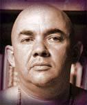

RUDRA PRACTICE
An excerpt from Spiritual Cannibalism by Swami Rudrananda
In all religions and philosophies, you encounter the struggle of man to reach into the heavens. It is as basic as the lack of understanding in us — our great tendency to bring things down to our level instead of reaching into the higher dimensions for help. The great need is to realize that our ordinary life is on the earth's dimension and that spiritual life is on a higher and completely different dimension. There is one thing that destroys anyone's ability to advance spiritually: the inability to control the mind and emotions. In order to free the mechanism for spiritual growth, this control is the first step in beginning a spiritual life.
As the mind and emotions are housed in the physical body and are functions of the physical man, so too the spiritual body has its own mechanism. This mechanism is sensitive and rarely used but is as complete a system as the mechanism that runs the physical life. If you want to hear a bird sing you can't stay in the middle of a city — you have to go to a place where there are open spaces and trees. To learn to contact the inner self one must also begin with special conditions.

First you must realize that there is the dimension of ordinary life and the dimension of extraordinary life. These dimensions require different muscle and nervous systems. You must strengthen those muscles which carry spiritual energy. They have to be used and exercised until they are strong enough to support the flow of energy that constitutes a spiritual life. Just as a child learning to walk is supported by his parents, so too a spiritual child requires the support of his teacher so that his development will be healthy and natural.
Trying to force development will cause the novice to be crippled spiritually, his mechanism twisted. It is essential to separate the mind and emotions from the psyche as they are of different dimensions.
You must find within yourself the deep, sincere need to grow.
There is a very simple exercise for this. You can work either in a group or by yourself to quiet the mind and emotions. This is done by using a point of contact. You focus on your teacher or an object as you open to your inner self. This gives you support until your muscles are strong enough to draw energy directly from the atmosphere.
The person who undertakes these exercises must believe in God, or in a higher power, or in a great potential within himself. This is necessary because the goal of the exercise is surrender — the removal of all blocks — to allow the higher force to begin the process of destroying the ego, the physical, lower force within us.
The first step involves using an object or a teacher, sitting before either in a relaxed manner. You must find within yourself the deep, sincere need to grow. You must bring the wish deep within your chest area and ask deeply, as if the voiced wish were emanating from your heart, for help to surrender. This wish must be silently repeated several times until there is a sensation of an opening, like the opening of a flower.
This is the beginning of the second dimension, or spiritual world. The opening is the inner wish that in turn opens the mechanism of the person, making a place for the higher force to enter. The aim of the exercise is to maintain the opening in the chest and to deepen it by relaxing and asking for help within this area. You are breaking down the blocks of the physical dimension. The energy is refined, and this brings about a chemical change, enabling you to use the spiritual muscles. The opening, or surrender, must be continuous during the exercise in order for the force to enter and for the process of spiritual growth to begin.
Spiritual growth is a process of exercising and expanding the psychic muscle and nervous systems until they become controlled enough so they may be used at will. It also becomes, in time, a continuous process which works together with the ordinary life process. A growing spiritual life adds a quality and depth to life.
Asking from the very depths of yourself to surrender or attain a state of nothingness is the key to opening to the flow of higher energy. As you surrender and ask to open to higher cosmic energy, work to draw this energy into yourself and channel the energy through your energy centers (or chakras, as they are called).
A breathing exercise to use for drawing in cosmic energy is as follows: you draw in the breath high up through the nose and into the heart chakra. As you start the breath into the heart, you swallow in the throat and try to feel the swallow travel down to your heart center. The swallow is to release tension in the throat chakra and allow energy to expand there. After swallowing, you continue to inhale breath into the heart center until the lungs are filled to their maximum capacity. The breath is held in the heart chakra for about the count of ten. This time count may become longer as strength is gained in the breathing.
During the time when the breath is held, you bring your mental concentration to the heart center and ask to surrender and try to feel very deeply inside the heart center. You must ask into the very core of your being, or deeply into the subconscious, to surrender to and receive the cosmic energy.
After the breath has been held for the count of ten, you exhale one fifth of the breath and inhale again, bringing the energy and the concentration to the energy center just below the navel. The breath is retained in the navel chakra for about the count of ten and then exhaled very slowly.
This double breathing to heart and navel chakras may be repeated from eight to ten times in a half hour period — about every three minutes. You should think of the breath as energy and develop the sensitivity to feel deep expansion of energy, letting the breathing be governed by that sensitivity as your strength and capacity increase.
When you are not doing the double breathing exercise, you should breathe into the navel chakra slowly, hold the breath for a few moments, and then exhale very slowly. If you feel an energy sensation in the navel or sex chakra, you should bring your attention to the tip of your spine and rock slowly from side to side on the base of the spine. This breaks up tension and allows the energy to rise up the spine to the top of the head.
When you begin to do this exercise, your sensitivity may not be on the deeper energy levels. At first, you may not be able to feel definite energy sensations. This does not mean that the energy is not flowing through those channels but that you have not yet developed the sensitivity to feel it.
When this energy, known as the kundalini, rises from its dormant state, various spontaneous body movements sometimes occur. These may be uncontrolled body spasms and vibrations or heat. Also, as the kundalini force passes the throat energy center, the head may move back and forth rapidly. All these movements — and indeed any experience — must be surrendered to totally. There is no harm or danger in these movements as they are deep, healthful tension releases.
The kundalini energy gradually rising to the head over a period of time becomes stronger and stronger and eventually brings enlightenment.
This is an organic process of spiritual growth, continuously reaching for deeper and deeper states of surrender and openness to the flow of cosmic energy. The more deeply we attain openness and oneness with this higher energy, the more it will lift us up spiritually and the closer it will bring us to the realization of our oneness with God or everything in the universe.